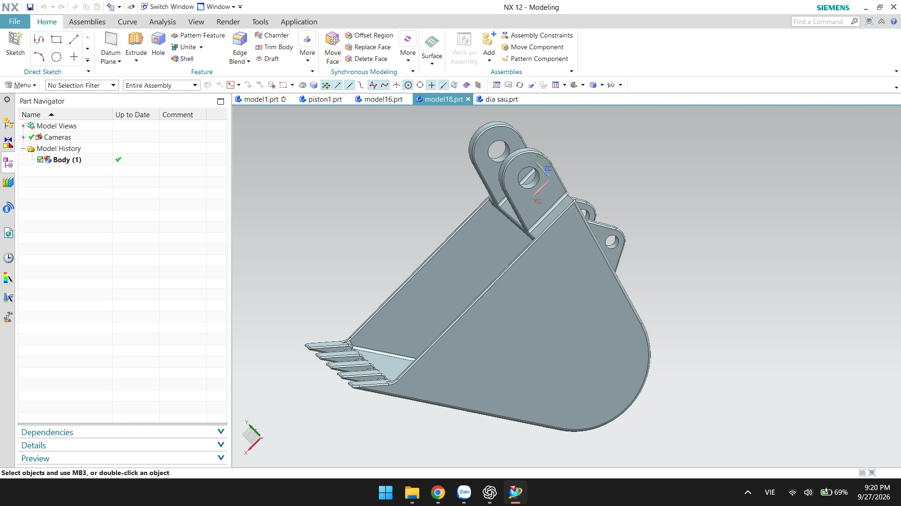

02 / DEFINE
Read the model in its full workspace.
The complete capture keeps the active geometry, interface and supporting panels in one frame before detailed edits begin.
- Confirm the active model and working context
- Keep reference information visible
- Avoid decisions based on isolated crops